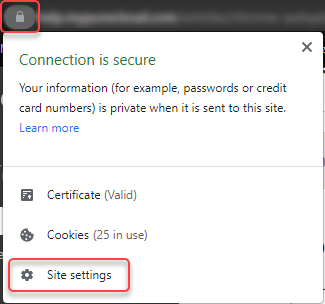
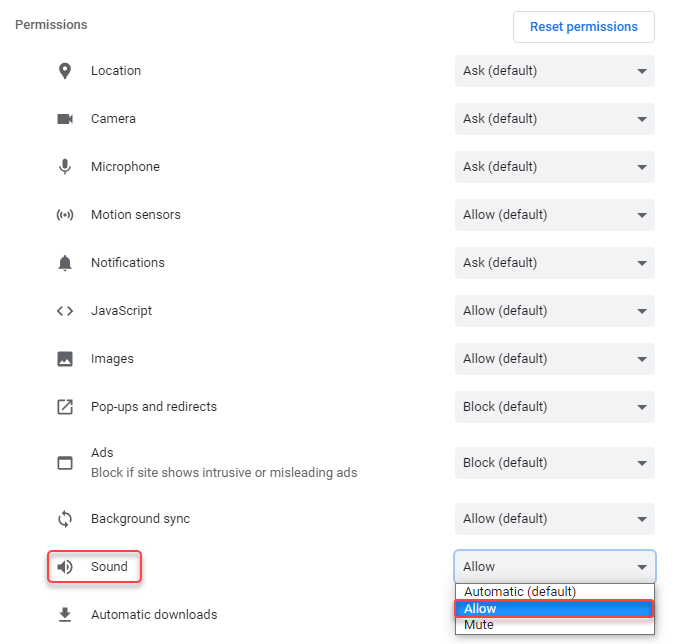
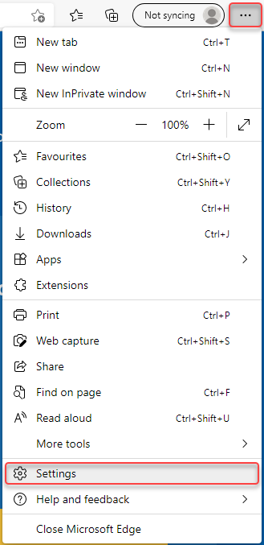
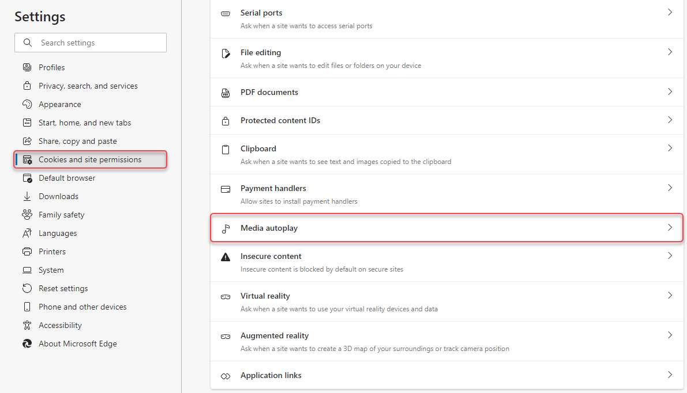
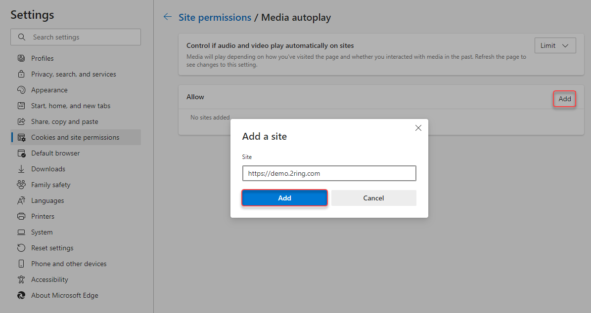

Troubleshooting¶
Media autoplay not working¶
Due to changes in the autoplay policy of some web browsers, KPI/Grid alerts or Youtube video may not start automatically until user interacts with page. To enable an autoplay function without user interaction, follow these steps:
Google Chrome
Click the button in the address bar of Google Chrome and select “Site Settings”
Under “Sound”, select “Allow”.

Microsoft Edge
Click button and select “Settings”.
Under “Cookies and site permissions” select “Media autoplay”.
Add a site that will be allowed to play media automatically.
